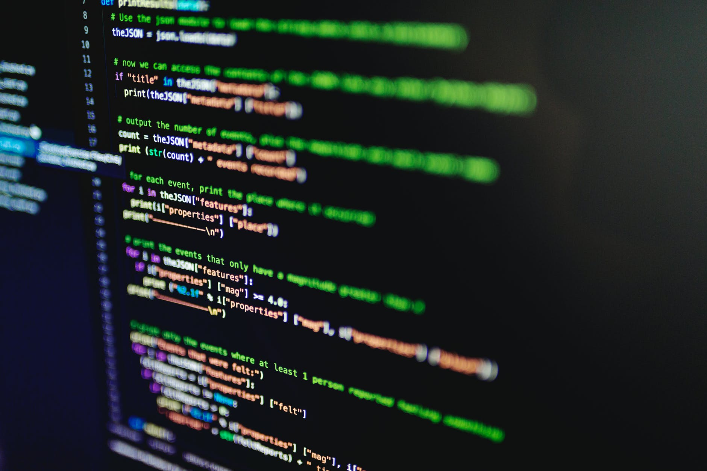
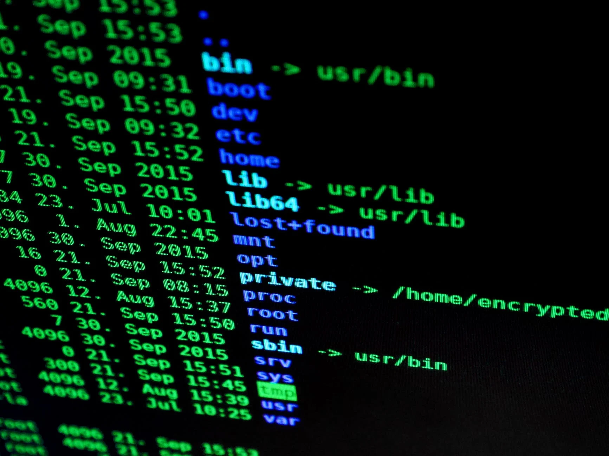

¿Qué es entonces la programación?

¿En qué consiste y cuál es su verdadera importancia en las nuevas sociedades?
¿Cuál es el impacto de la programación en la sociedad actual?
¿Por qué es importante saber programar en la actualidad?

¿Qué beneficios tiene programar?
Explique los principales lenguaje de programación
¿Como empezar a programar?
¿Que uso se le puede dar a la programacion?
¿Cómo influye la programacion en la vida social?
La programación es una de las etapas más importantes del ciclo de vida de un proyecto (explicaremzos más adelante lo que es este término), y requiere un método de trabajo. La programación es el resultado de dicho trabajo. La programación es el instrumento que permite la ejecución de las tareas automatizadas de un sistema informático. Las herramientas que utilizaremos para programar son los lenguajes de programación, a través de las cuales codificaremos los programas. Más allá de eso, la programación es un idioma más y aprenderlo nos beneficia y ayuda a lograr una comunicación directa con el ambiente tecnológico que nos rodea.
Consiste en un conjunto de instrucciones entendibles por el ordenador que permiten realizar un trabajo o resolver un problema. La programación es fundamental para acrecentar el avance tecnológico dentro de las industrias que para llevar a cabo sus funciones necesitan de sitios y aplicaciones creadas a partir de los códigos. No es novedad que vivimos en un mundo computarizado donde la tecnología forma parte de todo lo que hacemos.
Aprender a programar también permite el desarrollo de las capacidades como el pensamiento lógico, la creatividad y el ingenio. Estas se potencian y facilitan la resolución de problemas y la automatización de tareas a partir de una computadora.
Aprender a programar puede abrirte las puertas a un mejor empleo, nuevas áreas de trabajo o incluso a una nueva forma de ver cómo funciona todo a nuestro alrededor.
En ocasiones una de las grandes barreras para aprender algo nuevo es el miedo. Pero cuando se trata de algo tan común e importante para la vida cotidiana y que además nos acerca al entorno tecnológico, se convierte en una oportunidad que no podemos dejar pasar.
La programación ha sido la causante de que la tecnología haya podido avanzar hasta como la encontramos en la actualidad, permitiendo que se desarrollen inventos que faciliten la vida a todas las personas.
Lo realmente importante es comprender que para saber programar no hay que centrarse en aprender un lenguaje de programación, sino en entender el proceso de programación en sí, es decir, aprender a programar.
1. Python
Python es de código abierto, con una sintaxis simple y sencilla de entender, quizá el más fácil de este listado. Es idóneo para iniciarse en el mundo de la programación. Es muy versátil por lo que tiene múltiples áreas de aplicación como: inteligencia artificial, Big Data y desarrollo web.
2. Javascript
Otro lenguaje de programación orientado a objetos. Como es interpretado, no necesita compilación, entonces los navegadores leen el código y ejecutan las acciones indicadas. Esta característica, lo hace idóneo para crear páginas o aplicaciones web, con elementos interactivos o más visuales, de allí su relevancia en el desarrollo de videojuegos.
La capacidad de ejecutarse desde el navegador, lo hace el lenguaje más usado en el mundo, pues, aunque un sitio web esté hecho en otro lenguaje, puede contener algo desarrollado en JavaScript.
Primeramente la mejor opcion es buscar cursos que tengan que ver mas que todo con la lógica de programacion para así poder luego, con un lenguaje real programar con mayor facilidad. Lo siguiente seria usar un lenguaje de alto nivel, que sea interpretado preferiblemente para que se asimile mas al lenguaje humano. Ya con esto seria una buena idea seguir practicando y buscar en foros sobre temas que no se entiendan.
A través de la programación informática se puede crear una aplicación o software, para desarrollar un concepto o proyecto, y para llevar a cabo esta funcionalidad se necesita de un lenguaje informático para poder definir las funcionalidades que se desean elaborar.
La programacion en la vida es principalmente para tener un orden e las actividades a realizar ,necesiamos una programacion cuando nos alistamos para ir al colegio, para hacer alguna actividad especifica como bañarnos o lavarnos los dientes, la programacion facilita realizar las actividades con un orden .